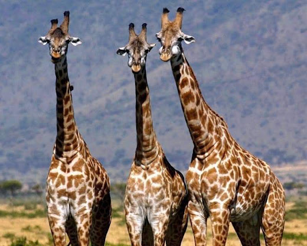
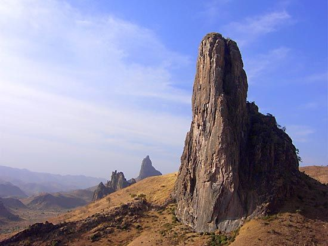
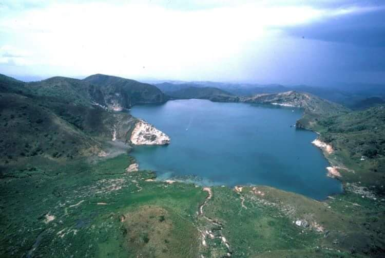
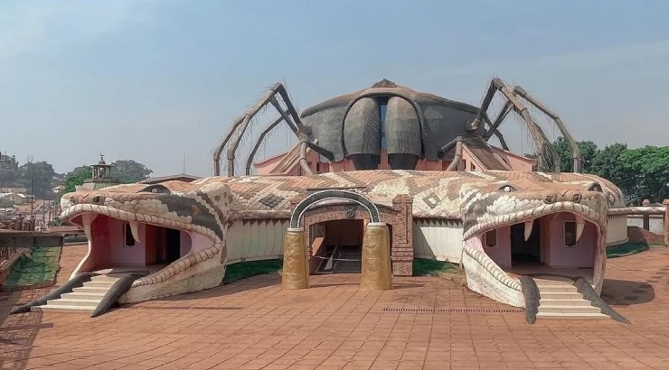

Mount Cameroon
Mount Cameroon is the highest mountain in West Africa, standing at 4,095 metres. It is famous for hiking, volcanic scenery and the annual Mount Cameroon Race of Hope.
Learn More
Limbe Wildlife Centre
A conservation centre that protects endangered gorillas, chimpanzees, monkeys and many other rescued wildlife species.
Learn More
Limbe Botanical Garden
Established in 1892, this garden contains hundreds of tropical plant species and offers a peaceful environment for visitors.
Learn More
Waza National Park
Home to elephants, lions, giraffes, antelopes and over 350 bird species, making it one of Cameroon’s finest safari parks.
Learn More
Korup National Park
One of Africa's oldest tropical rainforests, featuring rare plants, primates, butterflies and breathtaking hiking trails.
Learn More
Lobé Waterfalls
The only waterfalls in Africa that flow directly into the Atlantic Ocean, creating a spectacular natural attraction.
Learn More
Rhumsiki
Famous for its volcanic rock formations, mountain scenery, traditional villages and cultural experiences.
Learn More
Lake Nyos
A beautiful volcanic crater lake known worldwide for its geological importance and magnificent surrounding landscape.
Learn More
Dja Faunal Reserve
A UNESCO World Heritage Site containing one of Africa's largest protected rainforests and home to gorillas, chimpanzees and forest elephants.
Learn More
Foumban Royal Palace
The palace of the Bamoun Kingdom featuring remarkable architecture, royal history and an impressive museum showcasing Cameroon's cultural heritage.
Learn More
Ekom-Nkam Waterfalls
One of Cameroon's most spectacular waterfalls, surrounded by dense rainforest and featured in several international films.
Learn More
Bimbia Slave Trade Site
A historical destination preserving the memory of the transatlantic slave trade with guided tours and historical monuments.
Learn More
Campo Ma'an National Park
A biodiversity hotspot where visitors may encounter gorillas, forest elephants, sea turtles and beautiful tropical vegetation.
Learn More
Mefou National Park
A wildlife sanctuary near Yaoundé dedicated to protecting rescued primates while educating visitors on conservation.
Learn More
Bamenda Highlands
A breathtaking region known for rolling hills, cool climate, waterfalls, hiking trails and traditional Grassfields culture.
Learn More